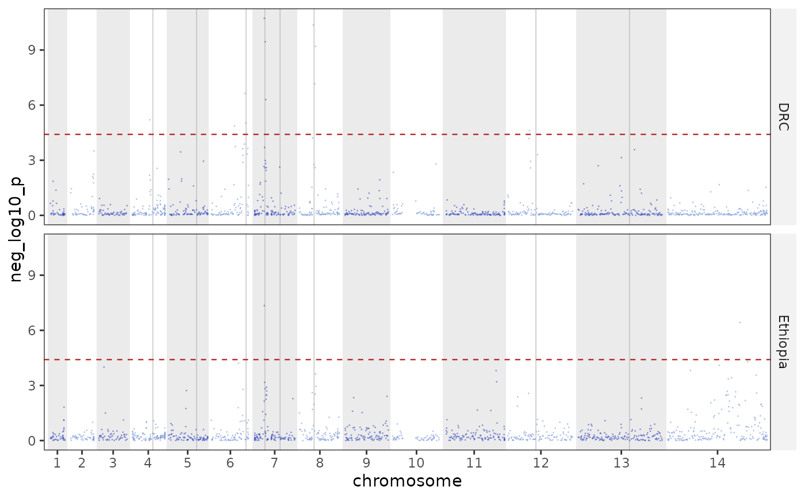

A container for the per-SNP, pairwise-group, and selection-statistic tables
produced by the Python plasgenomicsutils ibd tools, plus the shared
cumulative-genome coordinate the genome-wide plots use. Pass file paths or
data frames; each argument is optional so you can hold only what you plan to
plot. The plot_*() functions read from an object of this class.
Expected columns (superset; extras are kept):
per_snp_group:chr,pos,frac_pairs_ibd, optionallygroup(output ofanalyze_ibd_matrixper-SNP / per-SNP-per-group).pairwise_group:chr,pos,group_a,group_b,frac_pairs_ibd(per-SNP pairwise-group output).selection:chr,pos, a metric column (neg_log10_p,chi2_stat, orz_score), optionallygroupandsignificant(output ofibd_selection_statistic).
Methods
IbdResults$new()
Create an IbdResults object.
Usage
IbdResults$new(
per_snp_group = NULL,
pairwise_group = NULL,
selection = NULL,
threshold = NULL,
genes = NULL,
blocks = NULL,
meta = NULL,
gene_overlap = NULL,
pair_fraction = NULL,
group_col_in_meta = NULL,
min_block_snp = IBD_MIN_BLOCK_SNP,
min_block_kb = IBD_MIN_BLOCK_KB,
reference = DEFAULT_REFERENCE
)Arguments
per_snp_groupPer-SNP (optionally per-group) IBD table: path or data frame.
pairwise_groupPer-SNP pairwise-group IBD table: path or data frame.
selectionIBD selection-statistic table: path or data frame.
thresholdSignificance threshold(s): a scalar, a named vector or
group/thresholddata frame (per group), or a path to a one-number file.genesOptional gene-annotation track (
name,chr,start,end) drawn as reference lines on the Manhattan plots.blocksOptional hmmibd-rs IBD segments (path or data frame:
sample1,sample2,chr,start,end, optionaldifferent). Enables block-based gene triangles (gene_ibd_overlap()/plot_pairwise_ibd_for_genes()): only IBD segments (different == 0) are kept, but the analyzed-sample set (the denominator) is taken from every row first, so pairs that are never IBD still count.metaOptional sample metadata (path or data frame with a
samplecolumn plus grouping columns), used to groupblockspairs.gene_overlapOptional precomputed per-gene per-group-pair block-overlap table (from
plasgenomicsutils ibd_gene_overlap:gene,group_a,group_b,frac_pairs_ibd, ...), used directly by the gene triangles.pair_fractionOptional genome-wide per-pair IBD fraction table (path or data frame) from
plasgenomicsutils ibd_fraction_and_snp_density, forplot_ibd_pair_network(). Sample-keyed, so it narrows with the samples when groups are dropped.group_col_in_metaName of the
metacolumn that defines the grouping. It becomes the defaultgroupfor the block-based tools, and if the column is a factor its levels set the group order for every loaded table (equivalent to calling$set_group_order(levels(meta[[group_col_in_meta]]))).min_block_snp, min_block_kbDiscard IBD segments carrying fewer than
min_block_snpSNPs or shorter thanmin_block_kbkb (defaults15and15). Short, SNP-poor segments are commonly spurious, and this filter is conventionally applied before any IBD summary – it is built in so the blocks need not be pre-filtered.0disables either criterion. Only the IBD evidence is filtered: the analyzed-sample set (the denominator behind every fraction) still comes from every row of the blocks file, so a pair whose only segment is short still counts as compared. The SNP criterion needs theNsnpcolumn hmmibd-rs writes.referenceReference id for chromosome lengths (default
DEFAULT_REFERENCE).
IbdResults$set_group_order()
Set the order of the groups for every loaded table, so facets,
legends and axes follow it. Errors if a group present in the results is missing
from levels (it would silently become NA); warns about levels no result uses.
IbdResults$restrict_groups()
Drop or keep groups, in place. subset_groups() is the copying form.
IbdResults$subset_groups()
A new IbdResults holding only some of the groups.
Everything this object carries is either summarised per group or per group pair, so
groups are the natural unit to cut on. All of the per-SNP, group-pair, selection and
threshold tables are filtered; a group-pair row survives only when both of its
groups do, a cell against a dropped group having no meaning. meta, blocks and the
analysed-sample set narrow to the samples belonging to the surviving groups, so
block-derived output — gene_ibd_overlap(), gene_ibd_pairs(),
plot_ibd_network() — follows as well. The group order is trimmed to what survives.
Narrowing groups cannot recompute a summary, so every number kept is still the one computed over that group's full sample set. Groups are dropped, never re-derived.
IbdResults$get_analyzed_samples()
Analyzed-sample ids (from every block row, pre IBD filter), or NULL.
IbdResults$set_meta()
Replace the metadata, keeping the declared group order applied. Used by
add_ibd_clusters() to add derived columns; the sample column must survive.
IbdResults$print()
Compact summary of what the object holds.
Arguments
...Ignored; present for the
print()generic.
IbdResults$plot_ibd_sharing_manhattan()
Genome-wide per-SNP IBD-sharing Manhattan. See plot_ibd_sharing_manhattan().
Arguments
...Passed to
plot_ibd_sharing_manhattan().
IbdResults$plot_selection_manhattan()
IBD selection-statistic Manhattan. See plot_selection_manhattan().
Arguments
...Passed to
plot_selection_manhattan().
IbdResults$plot_ibd_tugofwar()
Selection/IBD "tug-of-war" mirror. See plot_ibd_tugofwar().
Arguments
...Passed to
plot_ibd_tugofwar().
IbdResults$plot_ibd_pairwise_group_heatmap()
Group x group IBD heatmap along the genome. See plot_ibd_pairwise_group_heatmap().
Arguments
...Passed to
plot_ibd_pairwise_group_heatmap().
IbdResults$plot_pairwise_ibd_for_genes()
Per-gene (or per-SNP) group x group IBD triangles. See plot_pairwise_ibd_for_genes().
Arguments
...Passed to
plot_pairwise_ibd_for_genes().
IbdResults$gene_ibd_overlap()
Per-gene IBD-block overlap between groups (see gene_ibd_overlap()).
Arguments
...Passed to
gene_ibd_overlap().
IbdResults$gene_ibd_pairs()
Sample pairs sharing IBD over each gene (see gene_ibd_pairs()).
Arguments
...Passed to
gene_ibd_pairs().
IbdResults$add_ibd_clusters()
Add single-linkage IBD cluster ids to the metadata.
Arguments
...Passed to
add_ibd_clusters().
IbdResults$plot_ibd_network()
Sample-level IBD network at a gene / locus (see plot_ibd_network()).
Arguments
...Passed to
plot_ibd_network().
IbdResults$plot_ibd_pair_network()
Genome-wide IBD relatedness network from the attached pair table
(see plot_ibd_pair_network()). Needs ibd_results(pair_fraction = ) or
$set_pair_fraction().
Arguments
...Passed to
plot_ibd_pair_network().
IbdResults$pair_fraction_summary()
Genome-wide IBD sharing summarised over the sample pairs spanning each
pair of metadata groups (see pair_fraction_summary()). Needs the pair table.
Arguments
groupMetadata column defining the groups (default the declared group column).
...Passed to
pair_fraction_summary().
IbdResults$pos_selection_genes()
Genes overlapping (or within within bp of) above-threshold
selection SNPs. See pos_selection_genes().
Arguments
...Passed to
pos_selection_genes().
Examples
ibd <- example_ibd_results()
groups <- levels(factor(ibd$get_selection()$group))
# everything except one group, or only the ones named
ibd$subset_groups(drop = groups[1])
#> <IbdResults> reference: pf3d7
#> per_snp_group : 5428 rows
#> pairwise_group: 13570 rows
#> selection : 5428 rows
#> thresholds : 4
#> genes : 8
pair <- ibd$subset_groups(keep = groups[1:2])
pair$plot_selection_manhattan()

# `restrict_groups()` is the same thing in place
ibd$clone(deep = TRUE)$restrict_groups(drop = groups[1])